Doctor Adventures
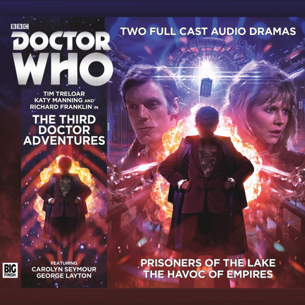
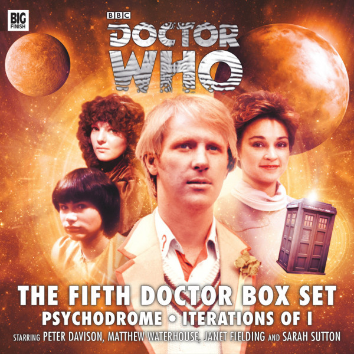
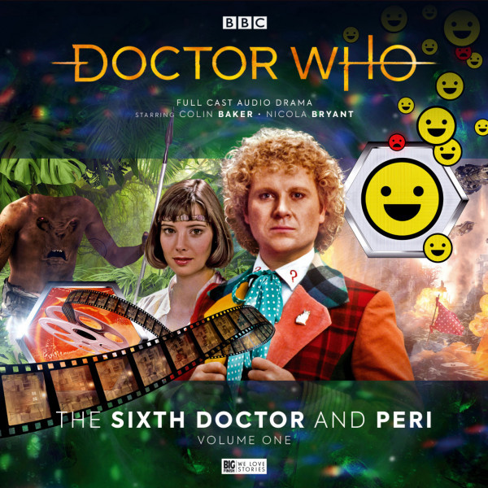
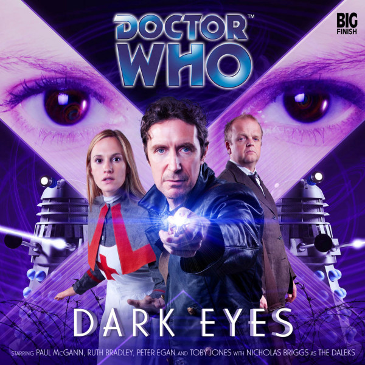
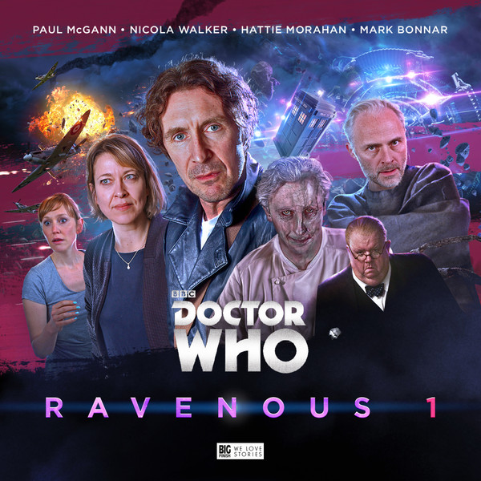
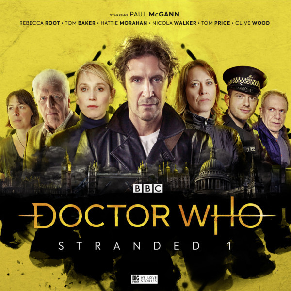
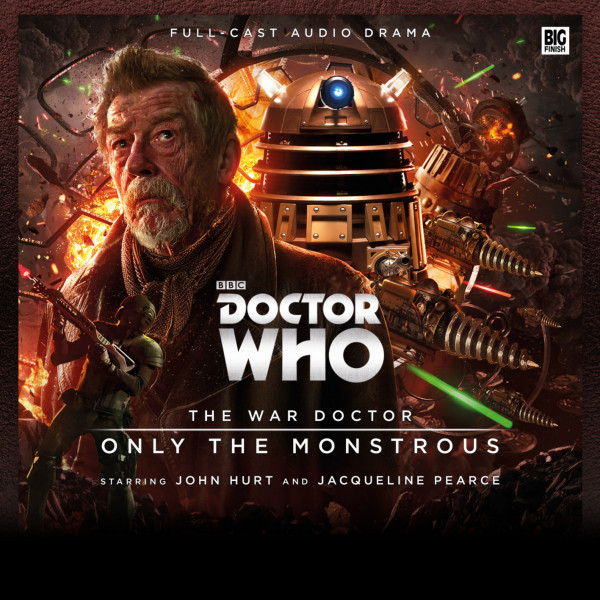
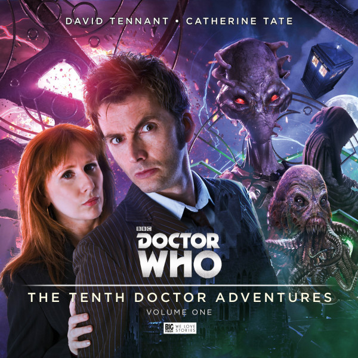
Doctor Chronicles
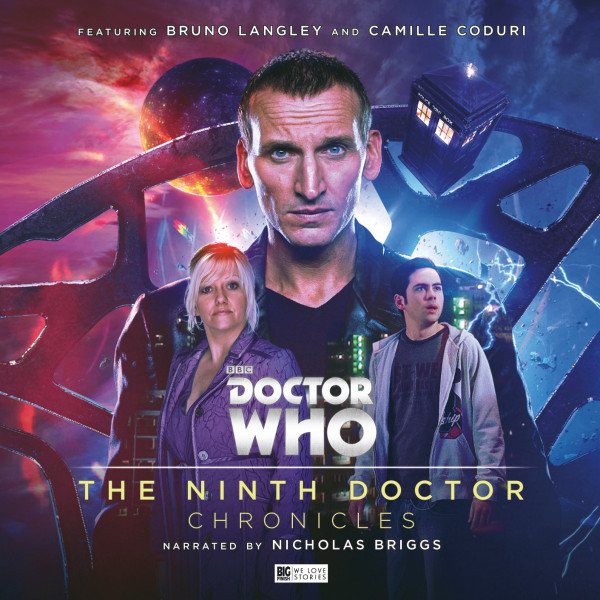
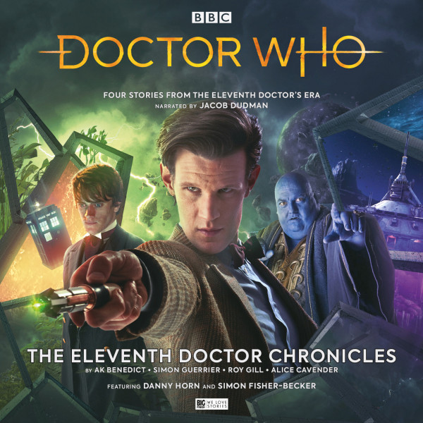
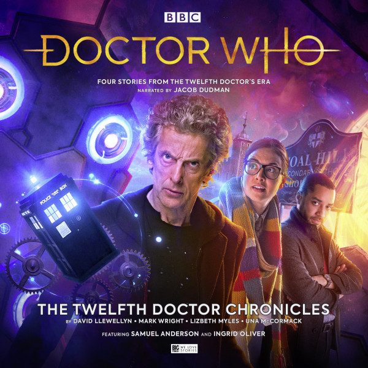
Other
Content owned by the BBC and Big Finish, I merely host these for people who either lost other access methods or have access but prefer an all-in-one site for their content.